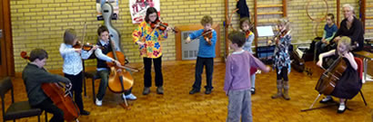

Original artwork by Tuulia Hyrske and © Colourstrings International
Limited 2009.
All rights reserved.
I've been a "Colourstrings mum" for almost 5 years and I am convinced that it is an excellent method of developing musicianship and instrumental skills in children. The emphasis on musicality provides a firm foundation for learning a instrument, and strong collaboration between teachers and parents ensures a high degree of success.
I'm delighted that my son can enjoy a high standard of music education - and it's all on our doorstep!
Ruth R, Staplehurst
Welcome to Cranbrook Colourstrings, our Music Kindergarten for babies, toddlers and children up to 7 years. Here young children can enjoy inspiring musical learning led by professional musicians who are trained specialists in Colourstrings teaching. Colourstrings teaching has an outstanding international reputation and is based on the principles of the composer and teacher Zoltán Kodály.
In small, age-related groups children learn to develop their pitch, rhythm and inner hearing through games and activities using traditional folk songs and classical music. Singing, rhythm games, movement to music, playing tuned and untuned percussion instruments, listening to music, performing, composing and improvising all form part of our exciting approach to musical learning.
Our Music Kindergarten provides the foundation for the instrumental tuition programme that we offer for violin, piano and cello. This programme is open to children who have completed at least two years of Music Kindergarten training.
